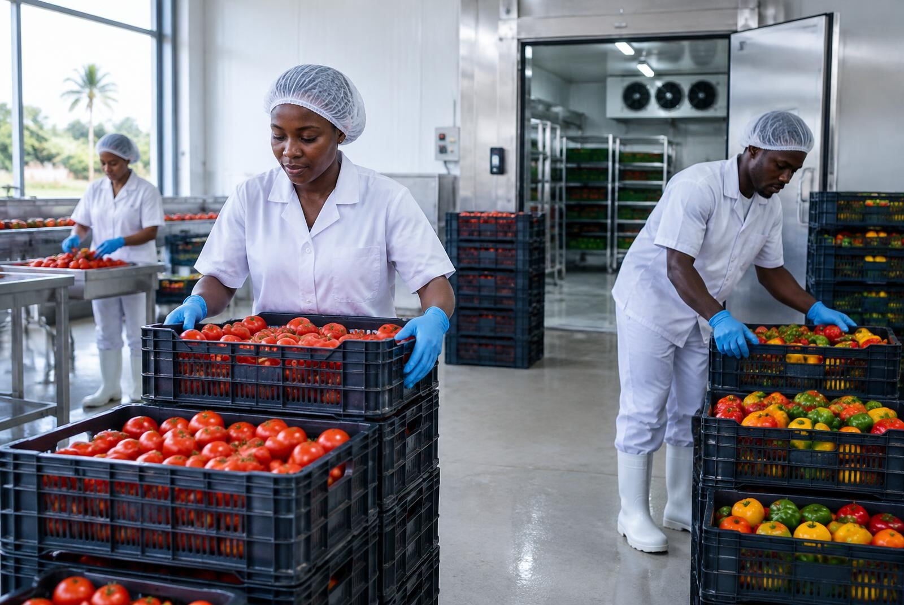
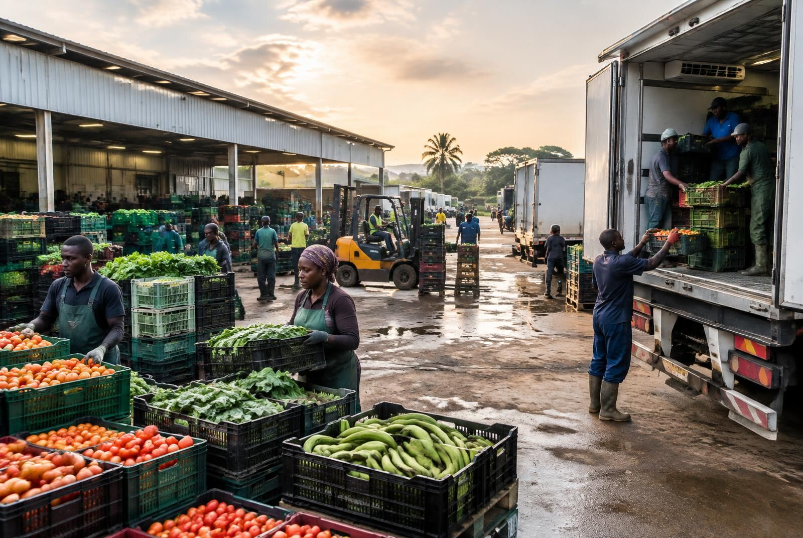

What we do
The systems behind the opportunity.
These are not unrelated services. They are interconnected components that Bottom Up Impact brings together around an opportunity.
01 — Food System Infrastructure
Building the physical systems that make food systems work.
- Cold-chain and storage systems
- Post-harvest infrastructure
- Processing facilities
- Irrigation systems
- Agricultural and community infrastructure
- Rural aggregation and storage hubs

02 — Clean Energy & Productive Use
Powering productive activities within food systems.
- Cold storage
- Irrigation
- Processing and milling
- Agricultural production
- Community hubs
- Other productive-use equipment

03 — Digital Connectivity & Data
Connecting people, information and services.
- Last-mile connectivity
- Community digital hubs
- Digital access and training
- Data collection and management
- Market and supply-chain information
- Digital tools for coordination and service delivery

04 — Value-Chain & Market Development
Helping local food enterprises capture more value.
- Aggregation
- Processing
- Packaging
- Cold storage
- Market access
- Buyer connections
- Supply-chain coordination
- Value-chain development

05 — Finance & Investment
Connecting viable opportunities to appropriate capital.
- Grants
- Concessional finance
- Loans
- Impact investment
- Public-private partnerships
- Blended finance
- Project and investment structuring

06 — Stakeholder Partnerships & Governance
Bringing the right actors together.
Each stakeholder brings something the others need. We help them align around a shared opportunity.
Bottom Up ImpactConvener
Communities
Governments
Investors
Farmers & producers
Agribusinesses
Infra & tech providers
Development orgs
Strategic partners
07 — Measurement, Learning & Scaling
Learning from what works and building from evidence.
- Performance measurement
- Learning from implementation
- Evidence-based decision-making
- Project improvement
- Replication
- Scaling viable models

How it comes together
One system, not seven departments.
Each component depends on the others. Bottom Up Impact connects them in sequence around a real opportunity.
Ground reality→Opportunity→Stakeholders→Infrastructure→Energy & Digital Systems→Value Chain→Finance→Implementation→Measurement→Scaling